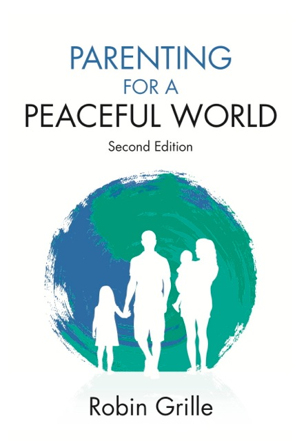

pagoda shell
photograph by
Chris Raggatt
EXCITING ANNOUNCEMENT: THE SECOND EDITION OF “PARENTING FOR A PEACEFUL WORLD” IS OUT NOW!
with 50 pages of new, eye-opening information – order online here
Emotion, emotional intelligence and our emotional health
Emotion is an essential aspect of interpersonal communication. The capacity to feel is what makes us human, and what connects us to one another. Emotional intelligence is what helps us to achieve our potential, and to fulfil our hearts’ ambitions. So, the more we develop and refine our emotional intelligence the more we can enjoy fulfilling relationships, realize our deepest longings, manage life’s conflicts with grace, and create fair, peaceful and sustainable societies.
Many of the experiences we have in childhood leave a lasting emotional impression, even if we don’t consciously recall them. Childhood therefore has a profound influence on how we relate to each other as adults.
The good news is there is a lot we can do to develop our emotional intelligence as adults. Counselling or psychotherapy can do much to help us develop our emotional health. Conflicts and difficulties can be turned into opportunities for learning, healing and growth.
Nurturing our emotional health can transform our relationships, and in fact, it can change the world.
Since our childhood experiences so strongly influence our emotional health, the way we raise our children is of profound consequence.
Find out more about my first book: ‘Parenting for a Peaceful World’, where you can learn about nurturing your child’s emotional intelligence, and understand how your own childhood experiences have influenced your emotional make-up as an adult. ‘Parenting for a Peaceful World’ is available for purchase from this site, dedicated to 'our emotional health'. Updates to the book are also available from this site.
Robin Grille’s book is filled with gems for anyone passionate about our future. This book should be required reading for all parents, politicians, social change activists, teachers, leaders and visionaries.
Kali Wendorf, editor, Byronchild magazine, Australia
Robin's second book, 'Heart To Heart Parenting' was released in April 2008. An empowering book for parents, Heart To Heart Parenting is more than just a 'how to' book about raising happy and resilient children. It aims to help you create a deep and lasting relationship that is unique to you and your child. Using techniques that are based on connection rather than shaming, manipulation and punishment, Robin Grille introduces you to insightful and practical ways to benefit your child's emotional well-being and social development
Heart to heart parenting is an exceptional book. Rather than tips and one-size-fits-all advice, Robin Grille offers a gentle guide to the authentic heart of parenting. His step-by-step approach supports parents through each stage to find the joy, fulfillment and immense personal growth that the ordinary task of parenting promises, for parents and children alike.
Dr Sarah J Buckley; GP/ family physician, Author of Gentle Birth, Gentle Mothering: The wisdom and science of gentle choices in pregnancy, birth and parenting. www.sarahjbuckley.com
Upcoming Events
Find out about upcoming events, courses, workshops and seminars at Robin's 'Heart to Heart Parenting' blog.
Emotional Intelligence :: Publications :: Counselling Services :: About Robin Grille :: Contact :: Links :: Home
Our Emotional Health web site built by Slam; best viewed at minimum 800x600 resolution. Copyright 2005